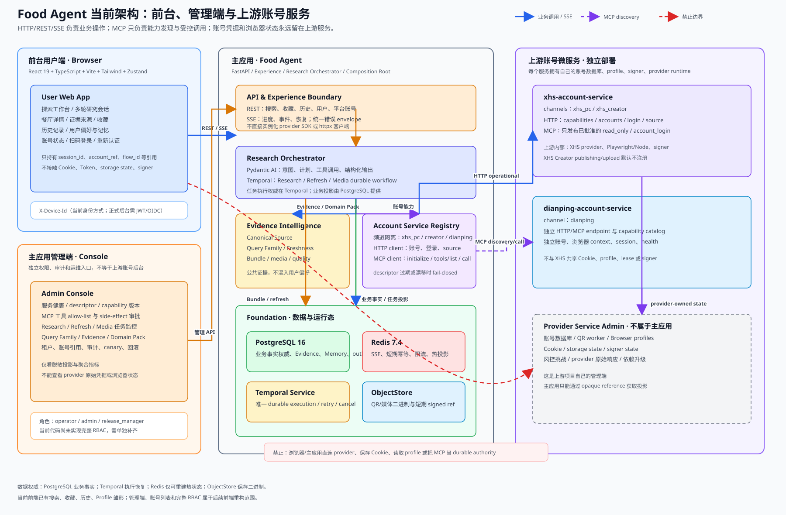

前台用户端
负责搜索、研究会话、餐厅结果、收藏、历史、偏好和账号扫码登录。只使用公开合同和 opaque references。
主应用管理端
负责服务健康、MCP 能力审批、任务、证据、Domain Pack、租户、审计、canary 和回滚。只读取脱敏投影。
上游账号服务后台
XHS 与大众点评分别拥有真实账号数据库、浏览器 profile、QR worker、Cookie 和 signer。该后台不属于主应用。

负责搜索、研究会话、餐厅结果、收藏、历史、偏好和账号扫码登录。只使用公开合同和 opaque references。
负责服务健康、MCP 能力审批、任务、证据、Domain Pack、租户、审计、canary 和回滚。只读取脱敏投影。
XHS 与大众点评分别拥有真实账号数据库、浏览器 profile、QR worker、Cookie 和 signer。该后台不属于主应用。